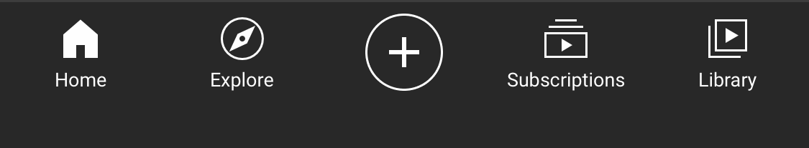

As the majority of people moved from a personal website to social media, web badge type of rewards became more standardized with Likes and Verification marks. According to an article "How removing ‘likes’ from Instagram could affect our mental health" from PBS newshour, Like button has become a profitable tool for influencers. Influencers use likes as a means of attracting advertisers, and now they will have to recalibrate how they do business.
read more...

This modern social reward system activates the ventral striatum, a part of the brain that focuses on decision making and reward-related behavior. It’s the same area that’s fired up when people gamble, enjoy a slice of cake or have sex, and cognitive neurologist Ofir Turel thinks this is why checking social media is so enticing.
read more...

Under the new policy, likes would no longer be visible to others. Only the profile owner would be able to see like counts on their own photos. “The idea is to depressurize Instagram,” Instagram’s Mosseri said. “We’re trying to reduce anxiety, we’re trying to reduce social comparisons.” As it turns out, Turel said that losing the ability to see how many likes your fellow ‘grammers get could greatly impact how we use the app. By removing likes, Instagram also takes away reference points for users to compare their numbers to others.
go back to the past.